ColombiAPI: Access Colombian Data via APIs and Curated Datasets
Source:vignettes/colombiAPI_vignette.Rmd
colombiAPI_vignette.Rmd
library(ColombiAPI)
library(dplyr)
#>
#> Attaching package: 'dplyr'
#> The following objects are masked from 'package:stats':
#>
#> filter, lag
#> The following objects are masked from 'package:base':
#>
#> intersect, setdiff, setequal, union
library(ggplot2)Introduction
The ColombiAPI package provides a unified interface to
access open data from the API-Colombia, World
Bank API, Nager.Date API, and the REST
Countries API, with a focus on Colombia. It
allows users to retrieve up-to-date or historical information on topics
such as geographic locations, cultural attractions, economic indicators,
demographic data, national holidays, and key country-level details.
In addition to API-access functions, the package includes a collection of curated datasets related to Colombia. These datasets cover a wide range of topics including air quality monitoring, education (public schools), business and holiday calendars, agricultural exports (coffee), regulatory information (cannabis licenses), climate data (Medellin rainfall), and urban development (Bogota shopping malls).
ColombiAPI is designed to support users working with
data related to Colombia by integrating international
RESTful APIs with Colombian-specific APIs and structured, reliable
datasets from public, academic, and government sources into a single,
easy-to-use R package.
ColombiAPI Functions
The ColombiAPI package provides several core functions
to access real-time or historical information about
Colombia from public APIs such as
API-Colombia, World Bank API,
Nager.Date, and the REST Countries
API.
Below is a list of the main functions included in the package:
get_colombia_airports(): Get Colombia’s Airports from API Colombia.get_colombia_attractions(): Get All Touristic Attractions of Colombia from API Colombia.get_colombia_child_mortality(): Get Colombia’s Under-5 Mortality Rate from World Bank.get_colombia_cities(): Get All Cities of Colombia from API Colombia.get_colombia_cpi(): Get Colombia’s Consumer Price Index (2010 = 100) from World Bank.get_colombia_departments(): Get Colombia’s Departments from API Colombia.get_colombia_energy_use(): Get Colombia’s Energy Use (kg of oil equivalent per capita) from World Bank.get_colombia_gdp function(): Get Colombia’s GDP (current US$) from World Bank.get_colombia_holidays(): Get official public holidays in Colombia for a given year, e.g.,get_colombia_holidays(2025).get_colombia_hospital_beds(): Get Colombia’s Hospital Beds (per 1,000 people) from World Bank.get_colombia_invasive_species(): Get Invasive Species of Colombia from API Colombia.get_colombia_life_expectancy(): Get Colombia’s Life Expectancy at Birth (Total, Years) from World Bank.get_colombia_literacy_rate(): Get Colombia’s Adult Literacy Rate from World Bank.get_colombia_native_communities(): Get Native Communities of Colombia from API Colombia.get_colombia_natural_areas(): Get Natural Areas of Colombia from API Colombia.get_colombia_population(): Get Colombia’s Total Population from World Bank.get_colombia_presidents(): Get Colombia’s Presidents from API Colombia.get_colombia_radios(): Get Radios of Colombia from API Colombia.get_colombia_regions(): Get Colombia’s Regions from API Colombia.get_colombia_typical_dishes(): Get Typical Dishes of Colombia from API Colombia.get_colombia_unemployment(): Get Colombia’s Unemployment Rate (Total) from World Bank.get_country_info_co(): Get Country Information for Colombia from restcountries.view_datasets_ColombiAPI(): View available curated datasets included in ColombiAPI.
These functions allow users to access high-quality and structured
information on Colombia, which can be combined with
tools like dplyr and ggplot2 to
support a wide range of data analysis, visualization, and research
tasks. In the following sections, you’ll find examples on how to work
with ColombiAPI in practical scenarios.
Colombia’s GDP (Current US$) from World Bank 2022 - 2017
colombia_gdp <- head(get_colombia_gdp())
print(colombia_gdp)
#> # A tibble: 6 × 5
#> indicator country year value value_label
#> <chr> <chr> <int> <dbl> <chr>
#> 1 GDP (current US$) Colombia 2022 345632492851. 345,632,492,851
#> 2 GDP (current US$) Colombia 2021 318524633225. 318,524,633,225
#> 3 GDP (current US$) Colombia 2020 270348342541. 270,348,342,541
#> 4 GDP (current US$) Colombia 2019 323031701193. 323,031,701,193
#> 5 GDP (current US$) Colombia 2018 334198218098. 334,198,218,098
#> 6 GDP (current US$) Colombia 2017 311866875157. 311,866,875,157Colombia’s Life Expectancy at Birth from World Bank 2022 - 2017
colombia_life_expectancy <- head(get_colombia_life_expectancy())
print(colombia_life_expectancy)
#> # A tibble: 6 × 4
#> indicator country year value
#> <chr> <chr> <int> <dbl>
#> 1 Life expectancy at birth, total (years) Colombia 2022 76.5
#> 2 Life expectancy at birth, total (years) Colombia 2021 72.7
#> 3 Life expectancy at birth, total (years) Colombia 2020 74.8
#> 4 Life expectancy at birth, total (years) Colombia 2019 76.8
#> 5 Life expectancy at birth, total (years) Colombia 2018 76.6
#> 6 Life expectancy at birth, total (years) Colombia 2017 76.4Colombia’s Total Population from World Bank 2022 - 2017
colombia_population <- head(get_colombia_population())
print(colombia_population)
#> # A tibble: 6 × 5
#> indicator country year value value_label
#> <chr> <chr> <int> <int> <chr>
#> 1 Population, total Colombia 2022 51737944 51,737,944
#> 2 Population, total Colombia 2021 51188173 51,188,173
#> 3 Population, total Colombia 2020 50629997 50,629,997
#> 4 Population, total Colombia 2019 49907985 49,907,985
#> 5 Population, total Colombia 2018 49024465 49,024,465
#> 6 Population, total Colombia 2017 48131078 48,131,078Monthly Average Rainfall in Medellin
Medellin_rain_tbl_df %>%
group_by(month) %>%
summarise(mean_rainfall = mean(rainfall, na.rm = TRUE), .groups = "drop") %>%
ggplot(aes(x = month, y = mean_rainfall)) +
geom_line(size = 1, color = "steelblue") +
geom_point(size = 2, color = "darkred") +
labs(
title = "Climatological Monthly Average Rainfall in Medellin",
subtitle = "Each point represents the long-term mean rainfall for that month, averaged across all years",
x = "Month",
y = "Mean Rainfall (mm)"
) +
theme_minimal()
Dataset Suffixes
Each dataset in ColombiAPI is labeled with a
suffix to indicate its type and structure:
_df: A standard data frame._tbl_df: A tibble, a modern version of a data frame with better formatting and functionality._Date: An object of type Date.
Datasets Included in ColombiAPI
In addition to API functions, ColombiAPI includes
several preloaded datasets that provide valuable insights into various
aspects of Colombia:
Bogota_airstations_df: A data frame containing coordinates of air quality monitoring stations in Bogota.Bogota_business_Date: A Date object listing official business dates in Bogota.Colombia_coffee_tbl_df: A tibble with details of Colombian coffee export and import for the year 2016.
Viewing All Available Datasets
The ColombiAPI package includes a built-in function,
view_datasets_ColombiAPI(), which allows users to view a
comprehensive list of all datasets available in the package directly
from the console:
view_datasets_ColombiAPI()
#> Datasets available in the 'ColombiAPI' package:
#> [1] "Bogota_airstations_df" "Bogota_business_Date"
#> [3] "Bogota_holidays_Date" "Bogota_malls_tbl_df"
#> [5] "Cannabis_Licenses_tbl_df" "Colombia_coffee_tbl_df"
#> [7] "Medellin_rain_tbl_df" "Tulua_Public_Schools_tbl_df"Conclusion
The ColombiAPI package provides a unified and powerful
interface for accessing both real-time data through public APIs and a
collection of curated datasets about Colombia. By
integrating multiple data sources — including API-Colombia
for geography, culture, tourism, and government information, the
World Bank API for economic and demographic indicators,
Nager.Date for official holidays, and the
REST Countries API for general country details — the
package allows users to explore Colombia from multiple
perspectives in a structured and consistent way.
In addition to API-driven data, ColombiAPI offers
preloaded open datasets related to Colombia, such as Bogotá air
stations, public schools, business and holiday dates, coffee exports,
cannabis licenses, Medellin rainfall, and malls in Bogota. This dual
approach of combining live API data with curated datasets empowers users
to analyze Colombia’s social, economic, environmental, and cultural
landscape in greater depth.
Designed to support reproducible research, education, policy
analysis, and data journalism, ColombiAPI makes it possible
to seamlessly integrate Colombian data into the R ecosystem, ensuring
accessibility, reliability, and clarity for a wide range of
applications.